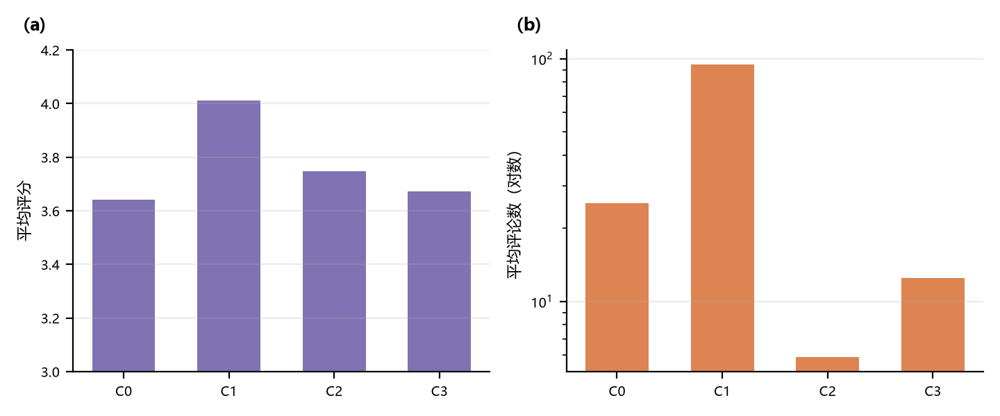
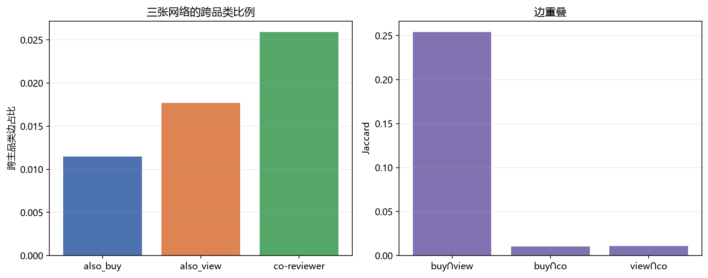

关键指标
游戏本体商品
40,259
去重后 71,911 件中的 55.98%
建模评论
1,456,092
正类率 74.75%
仅文本宏 F1
0.8727
文本+元数据 0.8635，元数据无稳定增量
时间外推宏 F1
0.9048
≤2014 训练 → 2015+ 测试
四个运营分层
簇 0 · 中等热度 · 评分偏低
7,797 件
平均评分 3.641 · 评论 25.4 条
verified 0.700 · 价格观测 0.000
质量/退货排查：评分 3.64、verified 0.70，优先看差评主题。
簇 1 · 高热度 · 共购密集
11,877 件
平均评分 4.011 · 评论 94.5 条
verified 0.638 · 价格观测 0.151
系列捆绑与交叉推荐：评论 94.5 条、also_buy 47.5，适合做组合位。
簇 2 · 长尾 · 共购稀疏
18,430 件
平均评分 3.747 · 评论 5.9 条
verified 0.662 · 价格观测 0.181
搜索/自动化运营：45.8% 长尾、平均 5.9 条评论，不做人工精运营。
簇 3 · 中等热度 · Software
2,155 件
平均评分 3.671 · 评论 12.5 条
verified 0.709 · 价格观测 0.393
价格带分析：价格观测率 0.393，适合做 Software 价格实验。
留出集外部验证
| 簇 | 商品数 | 平均评分 | 评论量 | verified | 价格观测率 |
|---|---|---|---|---|---|
| 0 | 3,583 | 4.008 | 97.5 | 0.639 | 0.154 |
| 1 | 2,350 | 3.661 | 24.3 | 0.694 | 0.000 |
| 2 | 5,504 | 3.745 | 5.9 | 0.665 | 0.172 |
| 3 | 641 | 3.696 | 12.2 | 0.725 | 0.382 |
按 asin 70/30 切分，KMeans 只在训练集拟合；留出集按最近质心分配。评论量 ε²=0.437、also_buy ε²=0.479，评分 ε² 仅 0.006，说明簇主要按热度/共购结构分层，不是按评分分层。
文本与规则
仅文本宏 F1 0.8727，合并元数据 0.8635；否定范围特征把宏 F1 从 0.8689 提到 0.8785，否定子集错误率 15.95%→14.39%。跨主品类边占比：also_buy 0.0115、also_view 0.0177、共同评论人 0.0259；also_buy 与共同评论人网络 Jaccard 仅 0.0102。
图表


说明：also_buy 是推荐位，不是真实订单；价格缺失 83.44%，价格只做事后画像；BGE 对照为小样本，不能外推全量。